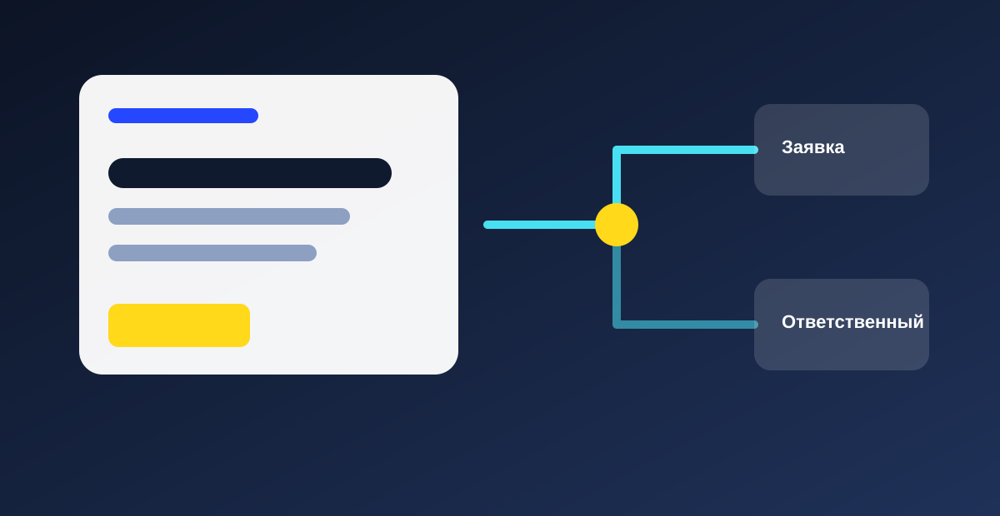
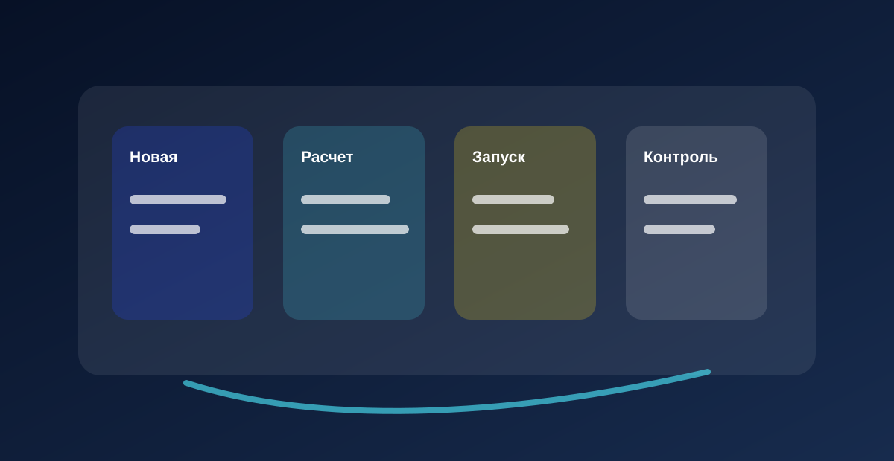

Вы впервые переходите на электронные документы
Контрагент просит отправлять УПД, акты или счета через электронный обмен. Мы поможем понять, что подключить и где смотреть статус.

Элдокс: запуск и сопровождение Saby
Поможем понять, какой Saby нужен именно вам, от чего зависит стоимость и как запустить сервис так, чтобы команда действительно начала им пользоваться.
С чего обычно начинается задача
Вы впервые столкнулись с электронными документами? Устали держать отчетность на памяти одного человека? Видите, что склад, касса и документы живут отдельно? Мы начинаем с вашей конкретной задачи, а уже потом подбираем Saby.
Контрагент просит отправлять УПД, акты или счета через электронный обмен. Мы поможем понять, что подключить и где смотреть статус.
Сроки, уведомления и ответы держатся на внимательности одного сотрудника. Saby помогает видеть ближайшие действия заранее.
Заявления, приказы и подписи ходят по кабинетам и чатам. КЭДО помогает сделать этот путь понятнее для HR и сотрудников.
Продажи, остатки, УПД и маркировка требуют единого порядка, чтобы ошибки не всплывали слишком поздно.
Направления Saby
Если вы не знаете, какой продукт Saby нужен, начните с ситуации. На детальных страницах объясняем человеческим языком, зачем нужен каждый блок и что влияет на расчет.
Ориентир по стоимости
Калькулятор оставляем как общий блок: сначала выбирается направление, затем регион, пользователи и дополнительные работы. Сейчас это прототип логики, без случайных цен и без устаревшего универсального прайса.
Условия подключения могут отличаться, поэтому Москва, Владивосток и другие города считаются отдельно.
ЭДО, отчетность, кадры, торговля и маркировка требуют разных настроек и разного объема запуска.
На расчет влияют пользователи, организации, обучение команды и сопровождение после старта.
Что меняется в цифровизации бизнеса
Публикации помогают увидеть, что Элдокс занимается не только подключением Saby, но и более широкими задачами: сайтами, CRM, ботами и тем, как бизнес получает и обрабатывает обращения.
 Saby
Saby
Разбираем, почему один и тот же продукт может стоить по-разному и какие данные подготовить перед расчетом.
Материал для ближайшей публикации
ЭДО
Простые признаки: контрагенты просят электронные документы, бумага теряется, статусы не видны.
Материал для ближайшей публикации
Отчетность
Организации, пользователи, сроки, требования и то, кто будет отвечать за отправку.
Материал для ближайшей публикации
СайтыПоказываем, что проверить в форме, тексте, аналитике и передаче обращения менеджеру.
Материал для ближайшей публикации
CRMРазбираем статусы, роли, напоминания и причины, по которым заявки остаются без движения.
Материал для ближайшей публикацииНе только Saby
Saby закрывает документы и учетные задачи. Но если проблема в заявках, продажах, повторных обращениях или ручной передаче между сотрудниками, рядом нужен сайт, CRM, бот или связка инструментов.
Собираем страницы, где понятны услуги, доверие, следующий шаг и путь обращения.
Настраиваем статусы, ответственных и напоминания, чтобы каждый запрос дошел до решения.
Помогаем собрать простые сценарии: первичный сбор данных, ответы и передача заявки менеджеру.
Доказательный блок
Документы, сроки, заявки и ответственные живут в переписке, таблицах и памяти сотрудников.
Команда понимает, где появляется задача, кто отвечает за следующий шаг и где проверить статус.
Вопросы и ответы
Да. Часто разумнее запустить ЭДО, отчетность или кадры отдельно, проверить порядок и потом расширять систему.
Цена зависит от региона, состава лицензии, пользователей и работ по настройке. Мы сначала даем ориентир, затем уточняем смету.
Начните с описания проблемы. Мы переведем ее в понятный набор вариантов и объясним, с чего лучше стартовать.
Заявка на расчет
Напишите, что нужно запустить: Saby, ЭДО, отчетность, кадры, торговлю, маркировку, сайт, CRM или бот. Мы уточним регион, состав работ и вернемся с понятным следующим шагом.